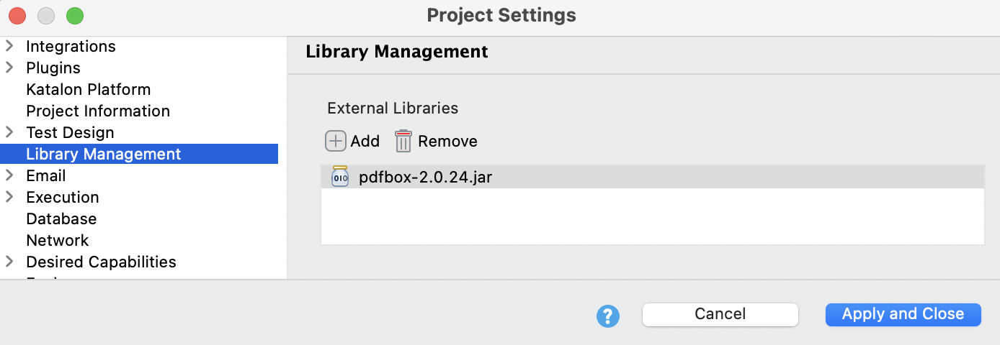
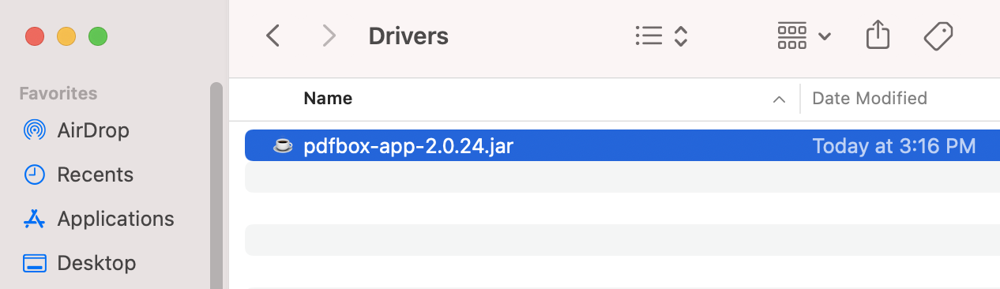
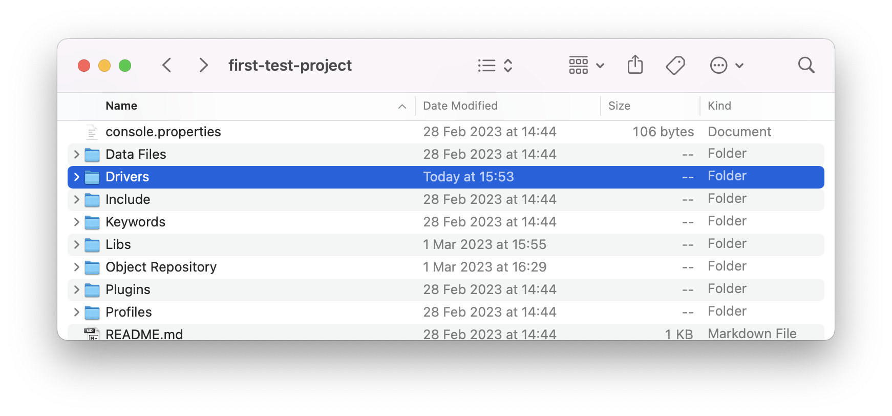
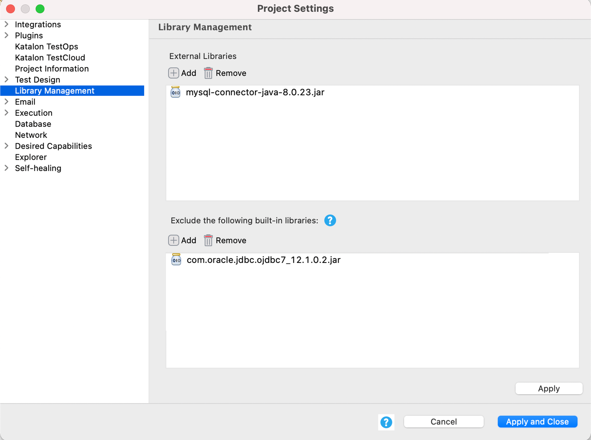

Library management in Katalon Studio
Katalon Studio allows using external Java .jar libraries either through project settings or adding them to a designated folder. You can leverage this to extend the capabilities of Katalon Studio and handle specific situations when needed.
This document shows you ways to add external libraries to Katalon Studio and replace the built-in libraries with the external ones in a test project.
Add external libraries to a project
You can add external libraries to a Katalon Studio project in three different ways:
- Use the Gradle plugin.
- Go to Library Management settings of a project.
- Copy and paste a library
.jarfile to the Drivers folder of a project.
Use Gradle in Katalon Studio
Use project settings
- In Katalon Studio, go to Project > Settings > Library Management.For Katalon Studio versions before 7.8.0, go to Project > Settings > External Library.
- In Library Management, click Add to browse your
.jarfile(s) (and its dependencies if any).To remove an added external library, select a library and click Remove > OK. - Click Apply and Close to save the settings.

Copy and paste a library .jar file to the Drivers folder
- Copy the
.jarfile (and its dependencies, if any) you want to add to the project. - Go to your project folder, select the Drivers folder and paste the
.jarfile. - Close and re-open the project in Katalon Studio to reload the class paths.
When your .jar library file is recognized by Katalon Studio, you should be able to use it.
Exclude built-in libraries
- An active Katalon Studio Enterprise license.
Katalon Studio version 7.8.0 onwards.
.classpath file of a project folder. This feature applies to all libraries in the .classpath file, excluding the following:com.kms.katalon.*.jarselenium-server-standalone-3.141.59.jarpoi-3.17.jarpoi-ooxml-3.17.jarpoi-ooxml-schemas-3.17.jarjava-client-7.0.0.jario.cucumber.*.jar
Removing the above libraries may cause failure of the relevant features.
You can also replace the excluded built-in library with an external one for flexible libraries usage in a test project.
- In Katalon Studio, go to Project > Settings > Library Management.
- In the Exclude the following built-in libraries section, click Add to add a built-in library you want to remove.
- In the External Libraries section, click Add to browse an external library to replace the excluded one.
- Click Apply and Close.